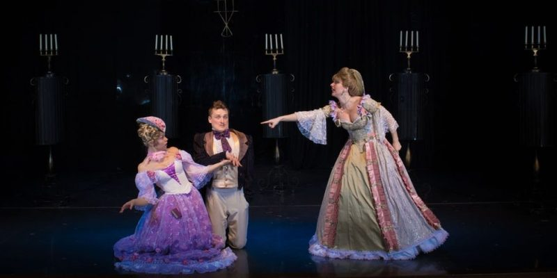

Las primeras obras de teatro se representaron con un solo actor (llamado protagonista) y un coro de personas que le ayudaban a contar la historia. Sin embargo, a lo largo del siglo V a.C. los dramaturgos continuaron innovando. El dramaturgo Esquilo añadió un segundo papel hablado llamado el antagonista, y redujo el coro de 50 a 12 cantantes, en su obra los persas, que representada por primera vez en el 472 a.C., siendo la más antigua que se conserva de todas las obras griegas. Su discípulo Sófocles añadió un tercer actor, mientras que Eurípides añadió un prólogo, introduciendo el tema de la obra, y el deus ex machina, una figura divina que atendía los aspectos que quedaban sueltos al final. Los ciudadanos ricos patrocinaban las obras de teatro pagando un impuesto llamado la choregia. Y al igual que Pisistratus, el tirano que estableció la ciudad Dionisia para aumentar su propia popularidad, muchos de estos ricos patrocinadores esperaban que el éxito de la obra que patrocinaban les proporcionara una entrada en la política.
 ⇠REGRESAR